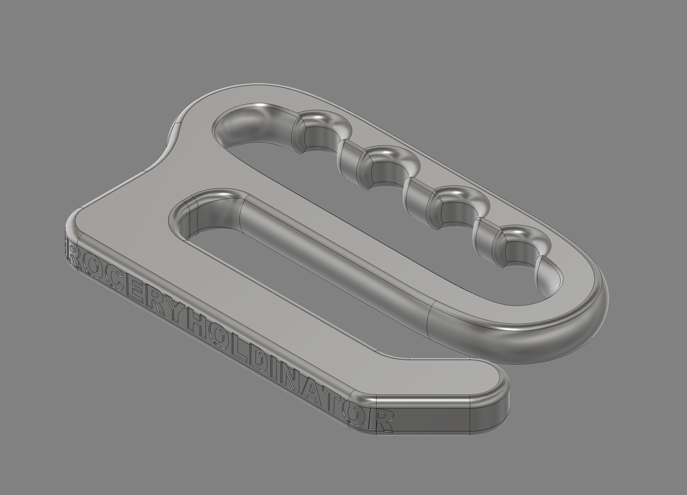

For this project, I designed the GroceryHoldinator, an ergonomic grocery bag carrier meant to make carrying multiple bags more comfortable. Regular plastic bag handles put a lot of pressure on the fingers, so this design combines them into one larger grip that is easier to hold.
Design Process
The handle was shaped with body modeling / Form tools in Fusion 360 so I could create smoother curves and a more ergonomic grip. I used regular solid modeling for the hook section, where I wanted cleaner and more controlled geometry. This let me combine a sculpted handle with a more functional lower structure.
Key Features
- Finger grooves to improve grip and comfort
- Hook shape with space for several grocery bag handles at once
- Sculpted handle from Fusion 360 Form / T-Spline tools for organic curves
- Solid-modeled hook section for precise, controlled geometry

Reflection
The overall goal was to redesign a common everyday experience in a way that is more comfortable, practical, and visually interesting. This design is fully 3D printable and fits the goal of combining ergonomic thinking with surface modeling skills.
This is a private blog for course notes and reflections. Content is not indexed or publicly listed.